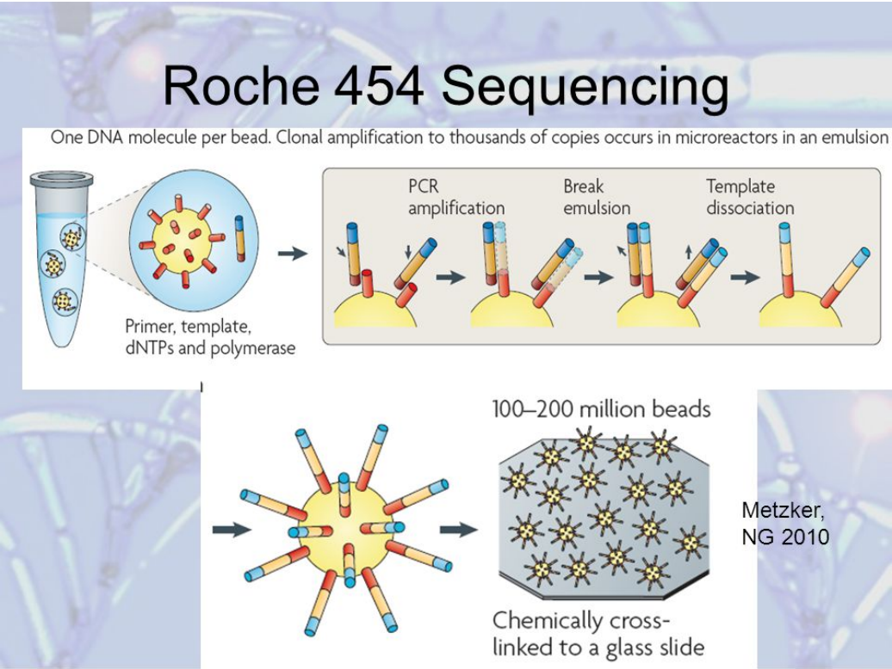
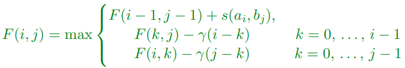

Computational Biology
Joshua Gregory
1 - Introduction
Data
-
Biology is big data
-
10² to 10¹² numbers
-
Lots of information stored in big databases
Interactions
-
Protein-protein common
-
Protein-DNA for regulation
-
Protein-environment how cell senses the world
- Ecosystems
Self-Organise
-
Protein complexes form machines
-
Life can organise into cells
-
Cells can organise into higher organisms
-
Organisms form populations that act together
-
Back to ecosystems
Dynamic
-
Cells chemical machines
-
Complex auto-regulation
- Cells divide
-
Can fuse sexually
- Life evolves
-
Almost all aspects of life governed by mechanisms
Comp Bio
-
Comp bio is big data problem
-
Tools in compsci essential to
-
Store the data
-
Make inference about the data
-
Tools of abstraction apply to biology too
Evolution
-
Charles Darwin
-
Natural Selection
-
Still being understood
Tree of life
-
Life being related through tree like structure
-
Molecularly, species share a huge amount in common
-
Transfer knowledge between species
Inheritance
-
Not generally understood in Darwin’s time
-
Modern theory by Gregor Mendel
-
Finally widely understood it occurred through exchange of
discrete units (genes)
Mendel’s Peas Experiment
Inheritance
-
Experiments explained if:
-
Traits carried by discrete units (genes)
-
Each individual carries two copies of a gene
(diploidy)
-
We inherit one copy from each parent
-
One gene is dominant
-
These not always true
-
Rigged experiment? Mechanism remained confused until
DNA
DNA
-
Deoxyribose Nucleic Acid
-
Crick and Watson
-
Discovery of double helix
Base Pairs
-
Double helix held together by 4 types of bases: A, T, G,
C
-
-
Each base form base pairs A-T or C-G
DNA Replication
What does DNA do?
-
Gets copied to messenger RNA through transcription
-
mRNA then gets translated to proteins
-
A lot does not code for protein
-
Can code for RNA molecules (ribozymes)
-
Used for controlling the cell
-
Can be junk - caused by replication
-
Or we’re not quite sure…
RNA and DNA
-
The base U is used in RNA instead of T
Transcription by RNA Polymerase
-
DNA unwound, mRNA encoded, DNA rewound
Exons and Introns
-
Exons are regions in DNA that will encode the RNA
-
Introns are the noncoding regions
mRNA to Protein Translation
-
Ribosome moves across the mRNA strand
-
The groups of 3 nucleotides (codons) act as the code for
amino acid molecules
-
Can have multiple codes for the same acid
-
The amino acids attached together in the right order
-
Then the strand of acids form the protein
-
DNA nucleotides -> mRNA nucleotides -> amino acids
-> protein
RNA Triplet to Amino Acids
-
Transcription: DNA -> RNA
-
Translation: RNA -> Protein
To help remember(?):
-
TranscRiption - creating RNA, transcribing the DNA to RNA
-
Translation - translating the language of RNA to the
language of proteins
What do proteins do?
-
Main building block of cells
-
Form skeleton (lipid layer of membranes)
-
Act as chemical machines (enzymes)
-
Act as mechanical machines
-
Large part of control mechanism
-
Not everything in cell is protein
-
There is DNA and RNA
-
Rna can fold up like proteins and act as catalysts
(ribosymes)
Computational challenges
-
A lot of challenges when trying to understand genome
-
Need to find coding regions (Exons)
-
Need to reconstruct DNA sequence from sequencing data
-
Need to compare different sequences
2 - Cell Regulation
Cells
-
Complicated machines
-
Still on-going understanding
Prokaryotes and Eukaryotes Cell Types
-
Share cell membrane, DNA code, ribosome (machine for
producing proteins)
-
Has a true nucleus
-
Multiple linear chromosomes in the nucleus
-
Larger and more complex
-
Formed by fusing different cells
-
Can be multicellular
-
e.g. plant and animal cells
-
Do not have a nucleus
-
Single DNA molecule in nucleoid
- Smaller
-
Usually unicellular
-
e.g. bacteria cell
Understanding proteins
-
Hard to understand and sequence directly
-
Deduce their sequence from DNA or mRNA
-
Measuring protein concentration difficult:
-
Field of proteomics
-
Uses mass spectrometers to count
Protein Folding
-
Understand their 3D shape
- Difficult
-
Crystallise them and use X-ray diffraction
-
Predicting structure is non-local problem
(Primary Structure)
-
The sequence/order of amino acids
Secondary Structure
-
Main components make up proteins:
-
Alpha helices
-
Beta sheets
-
Various folds and connecting parts
Folding
-
Protein folding is hard because typically amino acids apart
will interact through hydrogen bonding
-
RNA also folds (more flexible than DNA)
-
RNA folding easier to solve
-
Look for matching sub-sequences
RNA Folding
The First Law of Protein Sequence
Similar structures perform similar functions
-
Learn about function of protein by comparing it with
others
-
Evolution means many proteins are common to huge number of
organisms
-
Converse not necessarily true: dissimilar structures can
have similar function
Sequence Alignment
-
Gene sequences aligned and similarities compared
-
e.g. mouse gene to shark gene
Finding Aligned Sequences
-
Compare new sequences with ones already found
-
Compare with large database
-
They are usually annotated indicating what someone thinks a
protein does in some organism
Cell Regulation
-
Cells must respond to environment, maintain their
environment, divide
-
Need control mechanism, proteins and DNA help with
this
Promoter Region
-
Basically this is a region in the DNA which helps regulate
the levels of proteins in the cell
Regulation by Signal
Regulation in Promoter Region
-
Many different proteins can bind to the promoter
region
-
They can either excite the expression of the protein (by
increasing the probability of RNA-polymerase binding)
-
Or inhibit the expression of the protein
Binding Sites
?
TATA Box
-
Close to the coding regions is a region where are more A-T
pairs than usual
-
Because A-T pairs have only 2 hydrogen bonds, they are
easier to break
-
This helps RNA-polymerase split open the double helix
Gene Regulation Networks
-
Proteins can regulate their own expression and many other
proteins
-
Protein A can regulate protein B which in turn regulates protein A
-
In general regulation forms complex circuit
Motifs
-
To understand what’s going on we can look for
patterns or motifs
-
Spot common motifs by askings what patterns happen more
than by chance
-
Synthetic biology builds biological circuits from these
motifs
Dynamics
-
Gene regulation networks are dynamic
-
To understand: simulate the network
-
Requires knowledge of rate at which molecules are being
produced
Multicellular
-
Many Eukaryotes are multicellular
-
Many cases the cells differentiate
-
How do they know what role they play?
-
How do organisms develop so cells do the right thing?
-
You’ll find out later
3 - Sequencing
What is it?
-
DNA sequencing is the process of determining the nucleic
acid sequence – the order of nucleotides in DNA.
Sequencing Revolution
-
Advances in DNA sequencing
-
Reading DNA took a while to take off since structure
discovery in 1950s
-
Francis Crick had speculated on how DNA might code for
proteins
-
By removing some number of bases from DNA he was able to
show that DNA has a three letter code
Frederick Sanger
-
British biochemist
-
1995 discovered protein sequence for Insulin
-
Showed proteins actually chains
Sequencing DNA
-
Chemically difficult as bases not distinctive
-
1965 when first strands of RNA read
-
Copying DNA and breaking into smaller sequences was
effort
-
Various techniques developed in 1970s
-
1977 “Sanger Sequencing”
Sanger Sequencing
-
Use biological mechanisms for copying DNA
-
Would add Dideoxynucleoties (ddNTP) to a DNA chain
Modified ddNTP
-
Developed with a missing 3’ hydroxyl group which
prevented chain from developing any further
-
These marked (with radioactive phosphorus or later with
fluorescent marker)
-
DNA replication carried out with normal ddNTPs and a weak
concentration of these modified ddNTPs
-
Initially done in 4 containers, one for each base (in
container A only base A ddNTP were modified)
-
Later different fluorescence were used so everything could
be carried out in the same vessel
-
* means modified ddNTP
-
When DNA replicating, the chain would stop at these *
points
-
You could identify these points
Fractionation
-
Each solution added to a layer of gel
-
Using capillary electrophoresis different length DNA
fragments are sorted
-
From the distance travelled and the colour of the last
nucleotide base we can read off the sequence
Shotgun Sequencing
-
Saves careful preparation
Reconstruction
-
Looks easy but genome very repetitive
-
Sanger only allows you to sequence “reads” of
around 1000bp (base pairs)
-
Not clear what long range ordering is
-
Larger genomes, “scaffold” built where position
of some genes knew
-
Sequence both dies of large fragment so you know
approximate relationship
Human Genome Project
-
Sanger Sequencing helped human genome project
-
Costs were predicted high
-
Still don't know enough to provide all benefits
Improving Sanger
- Costs a lot
-
Improve with massive parallelisation
-
Many techniques used
Sequencing Techniques
-
Sanger: sequencing-by-synthesis
-
Using DNA-polymerase a strand of DNA is replicated
-
It turns out this technique ultimately triumphant
-
Another approach is sequence-by-ligation (or
hybridisation)
-
Create lots of short sections of DNA (oligonucleotides)
that will stick to an unbound stretch of DNA (or RNA)
-
Use in microarrays
Synthesis vs Ligation
454 Sequencer
-
First high throughput sequencer was Roche 454 machine
-
Amplified fragments of DNA attached to a microbead
-
These are contained in mirco-wells
-
Sequencing-by-synthesis is carried out
-
Added one type of base at a time with fluorescent
label
-
Can have difficulty distinguishing regions with repeated
base
Water in Oil Emulsion PCR

Illumina
-
The dominant next generation machines are produced by
Illumina (formally Solexa)
-
Uses technique called bridge amplification to create
clusters of identical strands on a 2-D surface
(substrate)
-
Can sequence 100s of million clusters at once
-
It then uses sequencing-by-synthesis to read the
sequence
-
Also read the other end of the sequence by flipping
Bridge Amplification
Identifying Sequence
? low res :(
Cost Per Human Genome

-
2007, 2015 jump
-
Surpassed Moore’s Law
100,000 Genome Project
-
Currently NHS and Sanger centre sequencing around 70,000
human genome to identify rare genetic diseases
-
Can now sequence a human genome within a day
-
As already sequenced human genome, no longer have
difficulty reconstructing sequence
Single Molecule DNA Sequencing
-
Replicating DNA can bring errors and biases
-
Most high-throughput techniques only read short sections
(around 100bp), reconstruction difficult
-
Current research to create machine that can read long
single DNA strand
Zero Mode Waveguide
-
Uses same fluorescence dNTPs as used in high-throughput
processing
-
Use micro-well smaller than the wavelength of light
-
Able to detect very small signal
-
Not high-throughput
Nanopore Technology
-
Force DNA through tiny pore and read out the sequence
-
Hand-held machines
-
Currently accuracy not quite good enough
4 - Sequence Re-assembly
DNA Sequencing
-
In shotgun genome sequencing, full genome broken into small
pieces
-
Pieces then read by a sequencing machine
-
Reads short sections (100-1000) bases
-
The reads are then assembled to construct the full genome
Overlapping the pieces to reconstruct. Need algorithms to do
this
Reads and Contigs
-
We are given set of reads (DNA segments)
-
We need to reconstruct them into contigs (set of overlapping DNA segments that form a consensus
region of DNA)
-
Problem as (0.1-2%) errors in reads
-
Shotgun important in speeding up human genome project
-
What data structure to use?
Digital Trees or Tries
-
A Trie (pronounced: “try”) or digital tree is a multiway tree data structure often used for
storing large sets of words
-
They are trees with a possible branch for every letter of
an alphabet
-
Their names comes from retrieval
-
Tries usually compactify the edges in the tree
-
All words end up with a special letter
“$”
Trie example

General Use of Tries
-
Implementation of sets
-
Quick insertion, deletion and find operations
-
Typically considerably quicker than binary trees and hash
tables
-
Good for spell checkers, completion algorithms,
longest-prefix matching, hyphenation
-
Each search finds longest match between the words in the
set and the query
Tries for Sequence Analysis
-
Tries can be used to store DNA or proteins
-
For reconstruction of DNA tries are very useful for finding
the next fitting section
-
Useful when there are errors, as by searching small
sub-tree you can find good match
-
For DNA you have a four-way (5 way?) tree, which means your
tree is deep but it doesn’t waste so much memory
Example table
Disadvantages of Tries
-
Table-based typically waste large amounts of memory
-
Often table-based used for first few layers, while lower
levels less memory intensive structure
-
These days memory less of a problem, so table used
-
Many implementations of tries, each suited to particular
task
-
For DNA, tries not too wasteful (maybe though for
proteins)
Suffix Tree
-
Suffix tree is a trie of all suffixes of a string
- E.g. banana
-
Importance of Suffix Tree
-
Fast algorithms to compute suffix trees (and the related
suffix array) are relatively new data structures
-
Important for string-based algorithms
-
Classic application is in finding a match for a query
string, Q, in a text, T
String Matching
-
To find a match of a query string, Q = an, in a text, T = banana, we can first construct the suffix tree of the string T
-
We then simply look up the query, Q, using the trie
(Image above)
Complexity of Suffix Tree
-
Using a regular trie for a suffix tree would typically use
far too much memory to be useful
-
However, by using pointers to the original text it is
possible to build a suffix tree using O(n) memory where n is the length of the text
-
Furthermore there is a linear time (O(n)) algorithm to
construct the trie
-
The algorithm is not however trivial to understand
Uses of Suffix Trees
-
Suffix trees are efficient whenever it is likely that you
will do multiple searches
-
Exact word matching is in itself is a very important
application
-
Suffix trees in combination with dynamic programming can be
used to do inexact matching (finding the match with the
smallest edit distance)
-
Suffix trees get used in bioinformatics, advanced machine
learning algorithms,...
-
(Prefix trees also exist as well lol)
New Generation Sequencers
-
Estimated cost in 2005 of genome sequencing was
$10,000,000
-
To reduce cost, produce new sequencing machines
-
Read shorter sections of DNA (20-100bp)
-
Can these be re-assembled?
Repeats
-
Difficulty of assembly is caused by repeates
-
How many repeats are there in human genome? (3.2 billions
base pairs)
-
Can read DNA in either directions, meaning effectively 6.4
billion bases
-
Important question for developing new technologies
Repeats in Human Genome
Repeats Structure
Computing Repeats
-
A naive program would take n² operations where n = 6.4*10⁹
-
This is too long
-
Couldn’t answer this question a few years ago, not
because of computer power, but as algorithms not been
developed
-
However using suffix arrays counting repeats was made
easy
5 - Sequence Matching
Alignment and Evolution
-
We want to transfer our knowledge about the function of a
protein through knowledge of similar proteins in different
organisms
-
Most proteins found in organism are close to those of near
relatives and sometimes not so near relatives
Practical Alignment
-
Alignment with known genomes is now the first task after
sequencing
-
Done with protein and DNA
-
Mutation rate sufficiently high that expect no alignment
between most species except if there is selective pressure
to conserve the structure
-
For DNA coding proteins there are a number of
“synonymous mutations” that leave the protein
unchanged - DNA is less conserved than proteins
-
In proteins many amino acids behave similarly so there is
little selection pressure against mutations
Synonymous Mutations
-
Some amino acids are rarer than others
-
But some codon sequences are slightly more popular than
their synonymouse partners
-
They may be more robust to mutation
-
They may be slight biases due to the translation,
etc.
Amino Acid Similarity
-
Most important distinguishing property is whether they are hydrophobic (oily) or hydrophilic (charged)
-
Other properties such as hydrogen bonds, etc.
-
Many observations can compute a table giving log-odds of
one amino acids being substituted by another
-
Two commonly used substitution tables (matrices) are PAM
and BLOSUM
-
Likely substitutions are positive, unlikely ones are
negative
Blosum50
-
Each letter represents an amino acid
Gaps
-
It is not infrequent that we find good matches where there
has been an insertion or deletion of some part of the
string
-
We start by considering a linear cost where the cost of a
gap is proportional to its length
-
In biology, a linear cost model is a poor description of
reality
-
Where there is an insertion, then it is often quite long
(this is a consequence of the copy mechanism in cells)
Inexact Sequence Matching
-
Given 2 sequences we want to find the best match between
them
-
We can measure the distance in terms of an edit distance or Levenshtein distance which measure the minimum number of moves to go
from one sequence to another
-
There are two cases that are commonly considered
-
Global matching: where we match the two complete
strings
-
Local matching: we find the sub-string with the best
match
Algorithms for Matching
-
Need efficient algorithms for matching
-
Number of possible inexact matches is exponential in the
size of the string so we can’t exhaustively try all
matches
-
Fortunately dynamical programming provides a relative
efficient algorithm
-
Dynamic programming is very important to a huge number of
sequence-based algorithms
Dynamic Programming
-
Powerful strategies for solving optimisation problems is dynamic programming
-
Build set of optimal partial solutions
-
Increase size of the partial solutions until have full
solution
-
Each step uses the set of optimal partial solutions found
in the previous step
-
(name bad as doesn't actually have much to do with
programming)
A Toy Problem
-
Find minimum cost path from (0,0) to (8,0) though
this:
-
- Costs in red
-
Cost of path is sum of weights on each link
Brute Force
-
Try every path
-
Problem with n steps we require n/2 to be diagonally up and n/2 to be diagonally down
-
The total number of paths is:
-
-
With n = 8 there are 70 paths
-
With n = 100 there are 1.01*10²⁹ paths
Building a solution
-
Solve problem efficiently using dynamic programming by
considering optimal paths of shorter length
-
Let c(i,j) denote cost of optimal path to node (i,j)
-
We denote the weights between two points on the lattice
by:
-
-
We define initial cost c(0,0) = 0
Forward Algorithm
-
Suppose we know the optimal costs for all the edges in
column i
-
Our task is to find the optimal cost at column i +1
-
If we consider the sites in the lattice then the optimal
cost will be:
-

-
(minimum of either the total cost going up, or total cost
going down??)
-
This is the defining equation in dynamic programming
-
We have to treat boundary sites specially, but this is just
book-keeping
Example
Backward Algorithm
-
Having found optimal costs c(i,j) we can find the optimal
path starting from (n,0)
-
At each step we have a choice of going up or down
-
We choose the direction which satisfies the
constraint
-
-
If both direction satisfy the constraint we have more than
one optimal path
Time Complexity
-
In our solution we had to compute the cost c(i,j) at each
lattice point
-
There were (n/2 + 1)² lattice point
-
It took constant time to compute each cost so the total
time to perform the forward algorithm was
Θ(n²)
-
The time complexity of the backward algorithm was
Θ(n)
-
This compares with exp(Θ(n)) for the brute force
algorithm
Global Matching
-
Needleman-Wunsch problem and solution for global
matching
-
Denote costs of a substitution, a→b, by s(a,b)
-
For proteins we can take this to be our Blosum50
matrix
-
There are different substitution matrices e.g. Blosum60
used for closely related species
-
We will assume the cost of an insertion or deletion is
-8
Problem Definition
-
We are given two strings:
-
a = a1a2 … am
-
b = b1b2 … bn
-
We want to find the minimum edit distance measuring how to
change a to b where the price of a substitution is s(a,b) and of an insertion or deletion d = -8
-
To compute this we compute a tableau showing the best
possible moves using the dynamic programming formula:
-
-
(value at i,j is the max of either substitution (diagonal),
left or right substitution or deletion)
Example Table
Then backwards algorithm (basically follow the arrows from the
bottom right):
Space Complexity
-
For two strings of length m and n the time complexity of dynamic programming is the
size of the tableau O(m n)
-
This is massively faster than exhaustive search
-
Unfortunately in biology we often want to match two very
long strings (particularly when looking at DNA)
-
The space complexity is then more of an issue than time
complexity (we don’t have enough memory to store the
tableau)
-
Algorithms exist that use linear space complexity
-
Can still be too slow for DNA
6 - Local Sequence Matching
Local Alignment
-
We see global alignment
-
But nature of evolution is that often section from one part
of the genome are accidentally copied to another
-
Thus, we are often more interested in finding best matching
sub-sequences
-
Problem known as the Smith-Waterman problem, they first
posed and gave an algorithm to solve
Dynamic Programming Solution
-
Surprisingly it's just a small tweak to global
assignment problem
-
Add the option of ignoring the match with cost 0
-
Gives the formula:
-
-
(essentially means there are no negative numbers in the
table)
Example Table
Then backward algorithm starting from the highest number in the
grid till zero
Difference to Global Assignment
-
The forward algorithm is same except we insist F(i,j) ≥
0
-
We also store the location of the highest F(i,j)
-
In the backward algorithm we start at the best value and go
back until we reach 0
-
Easy to change global to local assignment
Repeated and Overlapping Matches
-
So far considered single best match
-
In same cases (where have repeated domain or motif) we may
have one region being repeated many times within a second
sequence
-
We can modify our dynamic programming to allow this
-
Again we may believe that one sequence should be completely
contained in a second, then we can modify our boundary
conditions to find this
Gaps
-
Insertions are usually caused by adding a subsequence from
elsewhere
-
Deletions would result from jumping a number of bases or
treating an exon as an intron
-
Although these are rare events, once it happens then the
gap could be quite large
-
Up to now we have made a cost of a gap proportional to its
length, but this seems unrealistic
Dumb Gap Algorithm
-
If we assign a cost γ(g) to a gap size g then we could use the dynamic programme
-

-
Alas for two sequences of length n this is a O(n³) algorithm which is too slow for
most practical applications
- Better?
Affine Gap
-
If we choose a gap cost of
-
Then there exists a O(n²) algorithm to do
matching
-
An affine transform of a variable x is of the form a x + b (i.e. a straight line) - note that γ(g) is an affine
function
-
Using d = -12 and e = -2 gives a good model
-
It penalises any gap, with larger gaps being slightly more
punished
Affine Gap Algorithm
-
To efficiently cope with gaps we need to introduce three
matrices (rather than just F(i,j))
-
M(i,j) is the best score up to (i,j) given ai and bj align
-
Ia(i,j) is the best score given that ai aligns with a gap
-
Ib(i,j) is the best score given that bj aligns with a gap
Update Equation
Matching with Gaps
Different FSA
-
The finite automaton (FSA) description provides an elegant
visualisation of dynamic programming rules
-
It makes it much easier to come up with different models
that perhaps can better capture the evolutionary
process
-
But comes with cost that for each new state you need to
generate an extra matrix - slowing down matching
-
For affine gaps we can come up with an approximate two
state model that nearly always finds the same solution as
the three state model
Inexact Matching in Practice
-
Proteins area few 100 amino acids long as O(mn) is
doable
-
There are 100s of millions of proteins in the main protein
database so it can take a while to look for matches against
all known proteins
-
DNA sequences however, are of the order 10⁵ up to
10¹¹
-
Using dynamic programming on a large genome is not
feasible
Approximate Matching
-
Various techniques have been developed to find approximate
matches
-
Not guaranteed to find the best inexact match
-
Use heuristic of searching for sections with some exact
matches
-
Once these sections are identified they are extended and
combined to find good matches that are polished using
Smith-Waterman
-
These algorithms are a rag-bag of heuristic techniques that
are very effective if not very elegant
FASTA
-
FASTA is an approximate matching algorithm for both
proteins and nucleotide sequences
-
It firstly checks for short (k-mer) exact matches between a
query sequence and a target (k=2 for proteins and k=4-6 for
DNA)
-
Local regions identified with high density of k-mers
-
Local regions extended by looking for inexact matches
-
Ungapped regions are combined into gapped region
-
Finally plausible regions are rematched using dynamical
programming
BLAST
-
BLAST (Basic Local Alignment Search Tool) is the most
commonly used tool for alignment (mainly superseding
FASTA)
-
After removing low-complexity regions that might give high
matches, exact matches (slightly larger than FASTA) are
found
-
BLAST builds up high scoring “words” from the
exact matches
-
These seeds are extended into regions which can then be
combined (in BLAST2) to find gapped regions
-
Again these are polished with Smith-Waterman
Are Matches Real?
-
By chance we are likely to find some good matches even
between random sequences
-
What we would like to know is the probability of finding a
particular match by chance
-
This is used in algorithms like BLAST to decide which
matched regions it should keep
-
The problem is non-trivial because we are choosing the best
match that we found
Probability of a Match
-
Computing probability of an exact match between two random
strings is possible if we know the frequency of occurrence
of all the elements
-
For inexact matching this requires a bit more work
-
The BLOSUM50 scores are designed to give the
(log-)probability of a particular match between amino acid
residues
-
A lot of effort went into creating matching schemes that
give probability of a match
-
But what is the probability of the best of n matches being greater than Z?
Extreme Values
Extreme Value Distribution
-
The distribution of extreme values (best of k) is known as the extreme value distribution
-
Similar to the central limit theorem (which states that the
sum of random variables will be normally distributed), it
turns out that asymptotically (k→∞) the extreme
value of random deviates converges to a small number of
extreme value distributions
-
The most common is the Gumbel EVD given by:
-
Using EVD
-
Extreme value distributions become more accurate when we do
a large number of trials
-
-
In matching the number of matches are exponential in the
string length so we are in a situation where EVDs are quite
accurate
-
The probability of observing a match with a score at least Z is:
-